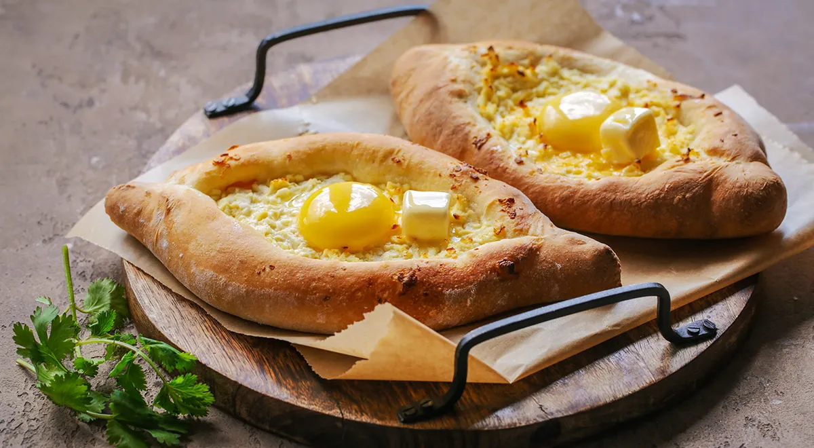

Рецепт Гозинаки

Ингредиенты:
- 500 г муки
- 250 мл воды
- 1 ч. ложка соли
- 1 ч. ложка сахара
- 10 г сухих дрожжей (или 25 г свежих)
- 2 ст. ложки растительного масла
- 300 г сулугуни (или другого сыра)
- 200 г феты (по желанию)
- 1-2 яйца
- 1 ч. ложка черного молотого перца (по вкусу)
Приготовление:
- Смешайте теплую воду, сахар и дрожжи. Дайте постоять до образования пены.
- Смешайте муку и соль. Влейте масло и дрожжевую смесь, замесите тесто.
- Накройте тесто и оставьте в теплом месте на 1-1,5 часа.
- Натрите сыры и смешайте с яйцом и перцем.
- Разделите тесто на части и раскатайте в овалы, оставляя края толще.
- Заполните центр начинкой и придайте форму лодочки.
- Выпекайте в разогретой духовке 20-25 минут.
- При желании вбейте в центр яйцо и подавайте горячим.